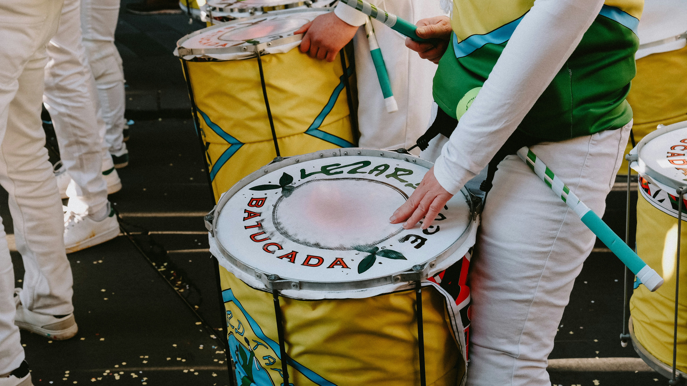

Tom Jobim
Bossa nova | 1927 - 1994
Pianista, maestro e compositor carioca, é um dos pais da bossa nova. Parceiro de Vinicius de Moraes, assina clássicos como "Garota de Ipanema" e "Águas de Março", conhecidos no mundo todo.
Do samba à bossa nova, da Tropicália ao rock nacional, a música do Brasil é feita de mistura e ritmo. Conheça alguns nomes que ajudaram a construir essa história.

Bossa nova | 1927 - 1994
Pianista, maestro e compositor carioca, é um dos pais da bossa nova. Parceiro de Vinicius de Moraes, assina clássicos como "Garota de Ipanema" e "Águas de Março", conhecidos no mundo todo.
MPB | 1945 - 1982
Nascida em Porto Alegre, é lembrada como uma das maiores intérpretes do país. Sua voz potente e sua forma de interpretar deram nova vida a canções de vários compositores da MPB.
Tropicália | Nascido em 1942
Baiano de Salvador, foi um dos líderes do movimento tropicalista ao lado de Caetano Veloso. Misturou ritmos brasileiros com influências do rock e foi ministro da Cultura entre 2003 e 2008.